Реконструкция байкальских магистралей:
значение для российской экономики

 
 

Стратегическая возможность для
России
На протяжении последних десятилетий центр мировой экономической активности неуклонно смещается в Азиатско-Тихоокеанский регион (АТР). В этой ситуации положение России между Европой и Азией создает для нее колоссальные экономические возможности. Евросоюз и тихоокеанские страны Азии сегодня — ключевые производящие и потребляющие регионы мира: закрепив свое положение как главного связующего пути между ними, Россия получит не только прямую экономическую выгоду от транзита и мощного экспортного пути для своих товаров, но и возможность привлекать инвестиции от заинтересованных сторон и наращивать свое экономическое значение в Евразии.
Железнодорожные перевозки между Азией и Европой растут. Например, в 2011 году из Китая в Европу ушло всего 17 контейнерных поездов, а в 2018 году — более 6 тыс. И это не предел. Для азиатских и европейских компаний железнодорожный транспорт привлекательнее морского. Прежде всего он быстрее: так, если морем груз из Японии в ЕС идет 53–62 дня, то паромом во Владивосток и оттуда поездом в ЕС — вдвое меньше. Кроме того, железные дороги экологичнее морского, авиа- и автомобильного транспорта, а экономическое значение этого фактора растет с каждым годом.
Несмотря на это, значительная часть грузопотока между ЕС и АТР по-прежнему идет морем, через Суэцкий канал. Главное, что не дает России воспользоваться своим уникальным транзитным положением — недостаточная пропускная способность основных железнодорожных магистралей: спрос на перевозки по Транссибу и БАМу опережает их развитие, и магистрали уже не справляются с растущим грузопотоком.
Как увеличить пропускную способность железной
дороги?
Самый длинный тоннель в России — Северомуйский на БАМе (15,3 км) — способен пропускать до 16 поездов в сутки
Варианты увеличения пропускной способности:
Строительство с продолжением
Транссибирскую магистраль построили в начале XX века, но у нее был стратегический недостаток: из-за близости к границе дорога была уязвима в случае конфликтов. Технические возможности для строительства северного дублера — БАМа — появились только при СССР. Новую магистраль сдали в эксплуатацию в 1989-м, и она стала самым дорогим инфраструктурным проектом в истории страны. Чтобы ускорить и упростить строительство, дорогу сделали однопутной, хотя изначально проектировали два пути и даже сооружали под второй путь насыпи и фермы мостов. Электрифицировать основную часть магистрали тоже не стали. Общая пропускная способность Транссиба и БАМа на тот момент была излишней для страны: в 1990-х по магистралям проходило всего несколько составов в сутки. Необходимость расширения появилась позже вместе с развитием российской экономики и интеграцией в международные транспортные схемы. В 2014 году РЖД запустили масштабную модернизацию БАМа и Транссиба, которая в определенной степени реализует идеи, изначально заложенные в проект.
Цель сегодняшней реконструкции магистралей — сделать так, чтобы по ним проходило больше поездов с более высокой скоростью. Для этого прокладывают вторые пути, строят новые разъезды и станции и модернизируют электроснабжение. Например, новые и модернизированные тяговые подстанции Транссиба будут выдерживать большую нагрузку, когда количество поездов увеличится. БАМ тоже постепенно электрифицируют, поскольку электровозы быстрее и экологичнее тепловозов. Та инфраструктура, которая уже есть, ремонтируется: обновляются пути, строятся тоннели, депо, разъезды и станции. Где-то прокладывают обходные пути, чтобы обойти особо крутые участки, на которых снижается скорость поездов. Кроме того, модернизация позволяет внедрить новые энерго- и ресурсосберегающие, экологически безопасные технологии. На тех же подстанциях, например, маслонаполненные выключатели в энергосистемах заменяются на элегазовые и вакуумные, которые значительно дольше служат и исключают риск выброса масел в воду и на почву.
Плоды реконструкции
Модернизация БАМа и Транссиба принесет комплексный эффект для экономики России. Помимо роста значения страны в мировой экономической системе, инфраструктурный проект такого уровня откроет новые возможности для бизнеса и промышленного развития сибирских и дальневосточных регионов, улучшит качество жизни людей.
Огромный потенциал эксперты видят в наращивании объема железнодорожных контейнерных перевозок, и проект реконструкции предусматривает качественные изменения в этой сфере. К 2025 году транзит контейнеров от восточной до западной границы России должен занимать всего 7 дней — втрое меньше, чем сейчас. Это сделает железнодорожные контейнерные перевозки еще привлекательнее для заказчиков. В результате к 2025 году объем транзитных контейнерных перевозок может увеличиться в 4 раза по сравнению с нынешним.
Экспортный потенциал
Помимо расширения транзитной роли, модернизация железных дорог усилит экспортные возможности России. В Сибири, Забайкалье и на Дальнем Востоке добывают уголь, выплавляют черные и цветные металлы, производят пластмассы, каучук и удобрения, зерно и сою, мясо и молоко, пиломатериалы и многое другое. Все это пользуется спросом в Азии: грузооборот в дальневосточных портах с 2004 по 2018 год вырос с 70 до 200 млн тонн в год. Можно было бы и больше, но богатства Сибири и Дальнего Востока вывозятся только по БАМу и Транссибу, и экспорт ограничен возможностями железнодорожной сети. Например, даже с учетом постепенного сокращения перевозок угля в 2020 году РЖД могли выполнить лишь половину заявок по его отправке на восток. В такой же ситуации в агропроме, например, в 2017 году из-за перегрузки железных дорог возникли проблемы с экспортом сверхурожая зерновых в Сибири. Модернизация БАМа и Транссиба даст импульс и для развития горно-металлургического кластера, лесной и перерабатывающей промышленности.
Три этапа модернизации: сколько грузов смогут
перевозить БАМ и Транссиб
До
модернизации
Первый этап
Второй этап
Третий этап

Уве Лойшнер
Эксперт по железнодорожному коридору Китай — Европа, специалист по работе немецкого логистического бизнеса на территории России
Значение БАМа и Транссиба: мнение эксперта
"Российский Дальний Восток до сих пор соединяется с европейской частью страны в основном железными дорогами. Только там, где они связывают различные территории, возникают условия для инвестпроектов и развития малого и среднего бизнеса. Это похоже на процессы, происходившие в Европе в XIX и XX веке: там основой экономического роста тоже были железные дороги: вслед за их строительством начиналось развитие бизнеса в регионе.
Наконец, транспортные потоки из Азии в Европу и обратно выгоднее проводить через территорию России. Транссиб и БАМ позволяют поставить контейнер на поезд во Владивостоке или Находке и быстро, без перегрузок отправить через всю страну на Запад. Расширение магистралей позволит отправлять по российским железным дорогам и те контейнеры, которые сейчас идут через Казахстан, и это значительно увеличит транзитный бизнес России".
Что даст реконструкция БАМа и Транссиба
Источник: РЖДСоциальные инвестиции
Суммарный бюджет реконструкции БАМа и Транссиба превышает триллион рублей: первый этап работ оценивается в 520 млрд рублей, второй — в 697 млрд рублей. Инвестиции такого масштаба создадут новые рабочие места и потребуют строительства жилья и социально значимых объектов. Всё это улучшит качество жизни на прилегающих к железным дорогам территориях.
Новые возможности для роста и развития промышленности раскроют экономический потенциал Сибири и Дальнего Востока, помогут привлечь дополнительные инвестиции, улучшить социальную и транспортную инфраструктуру и в конечном счете изменить ситуацию с оттоком населения из восточной части страны. А увеличение экспорта в АТР укрепит экономическую безопасность: диверсификация рынков сбыта очень важна в условиях экономических санкций против России.